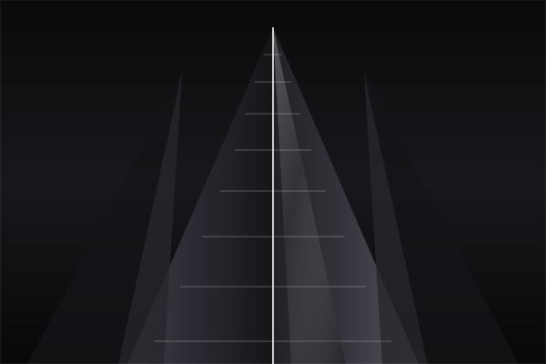

OCT 2026How I Built My Portfolio Website
A complete breakdown of my portfolio, design process and key takeaways. Why I chose vanilla HTML5, CSS3 clamp math, and zero framework overhead.
A complete breakdown of my portfolio, design process and key takeaways. Why I chose vanilla HTML5, CSS3 clamp math, and zero framework overhead.
Experiences, challenges and lessons from my academic journey. How low-level systems programming in C anchored my engineering discipline.
Essential tools for developers, productivity workflows, and why minimalist monochromatic aesthetics elevate real-world user experiences.